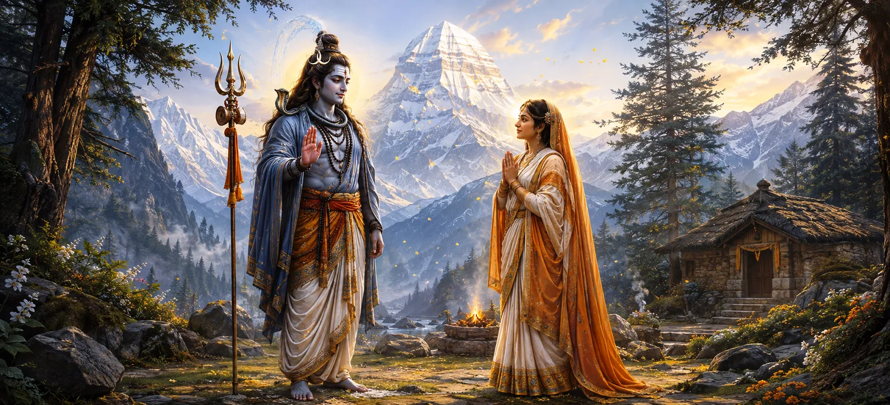

Having revealed his true divine form and witnessed the depth of Pārvatī's devotion, Lord Shiva spoke words that fulfilled her lifelong aspiration. Pleased beyond measure by her unwavering faith, patience, and spiritual wisdom, he formally accepted her as his future bride. This sacred moment marked the successful completion of her long austerities and opened the path toward their divine marriage.
Lord Shiva expressed his complete satisfaction with Pārvatī's devotion. Her faith had remained steady through every challenge, proving that her love was founded upon spiritual truth rather than temporary worldly desires.
For many years Pārvatī had performed austerities with a single purpose—to attain Shiva as her husband. The Lord's acceptance now fulfilled the sacred vow she had cherished throughout her spiritual journey.
Shiva addressed Pārvatī with affection and kindness. He praised her perseverance and assured her that her devotion had earned his grace. Every hardship she had endured had become a source of spiritual merit.
Hearing Shiva's acceptance, Pārvatī experienced immense joy. The long years of discipline, prayer, and sacrifice had finally borne fruit. Her heart was filled with gratitude and devotion toward the Lord.
This acceptance was more than a personal blessing. It signified the approaching union of Shiva and Shakti, a sacred event destined to bring harmony, protection, and spiritual upliftment to the universe.
The celestial beings rejoiced upon witnessing this sacred development. They knew that the acceptance of Pārvatī by Shiva would soon lead to events essential for restoring cosmic balance.
True devotion ultimately earns divine acceptance.
Spiritual goals are attained through steadfast effort.
Their union symbolizes cosmic harmony and divine completeness.
With Shiva's acceptance, Pārvatī's life entered a new and blessed phase. The years of austerity had come to completion, and preparations for the fulfillment of divine destiny could now begin.
Pārvatī's success reminds us that sincere devotion, patience, and dedication are never wasted. Though spiritual goals may require great effort and perseverance, divine grace eventually rewards those who remain faithful to their highest ideals.
The gods celebrated this sacred development with great joy. They recognized that the acceptance of Pārvatī by Shiva would soon lead to the fulfillment of divine purposes that affected all realms of existence.
Having accepted Pārvatī, Shiva prepared for the next stage of their divine story. The events that would follow would culminate in one of the most celebrated marriages in all sacred traditions.
"Divine grace comes to those whose devotion remains steadfast through every trial."
Lord Shiva has formally accepted Pārvatī and blessed the devotion that she nurtured through years of austerity. With this sacred promise established, the next step is to share the joyful news with her family and loved ones. Continue to the next chapter to witness Pārvatī's return and the beginning of preparations for the divine wedding.